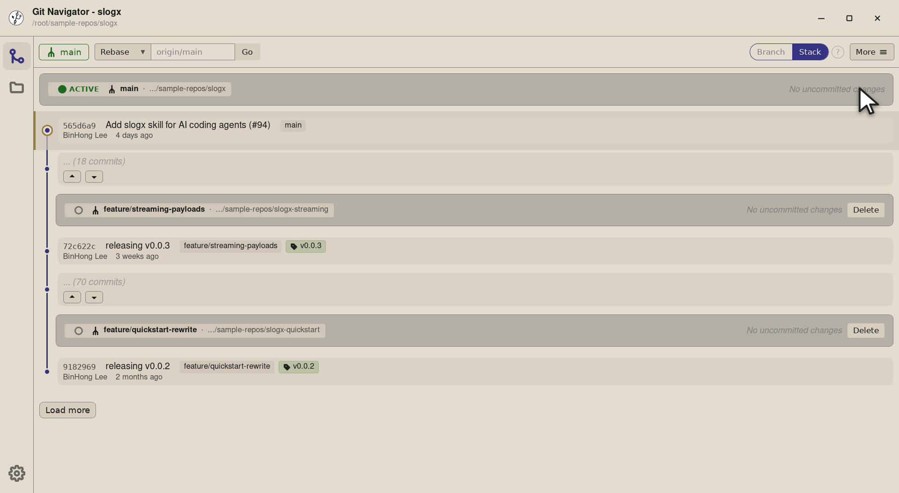
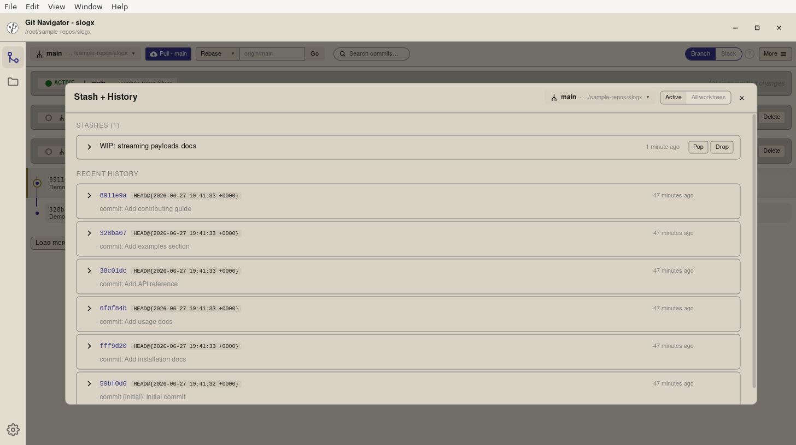
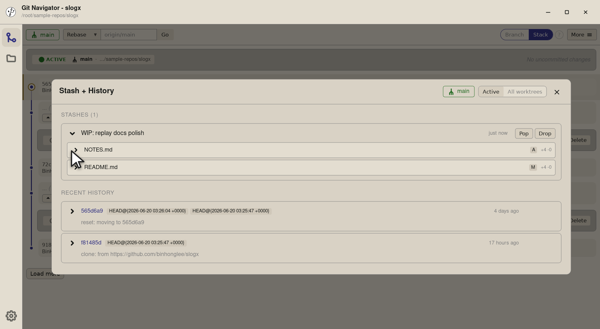
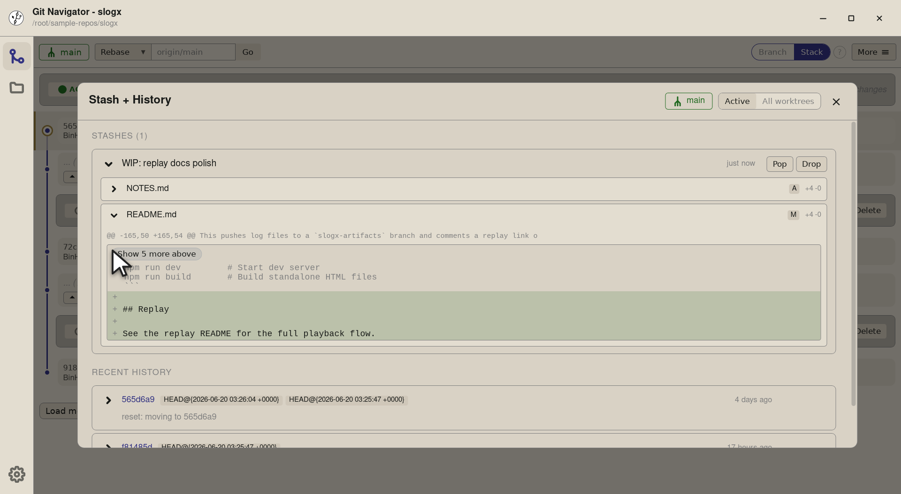
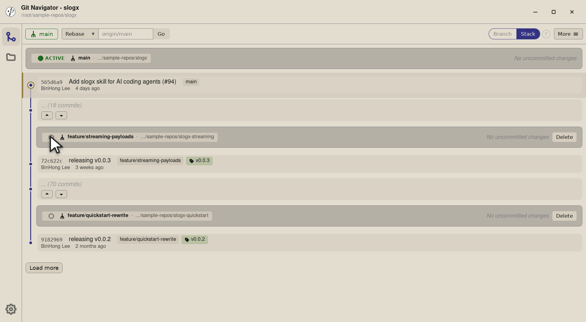
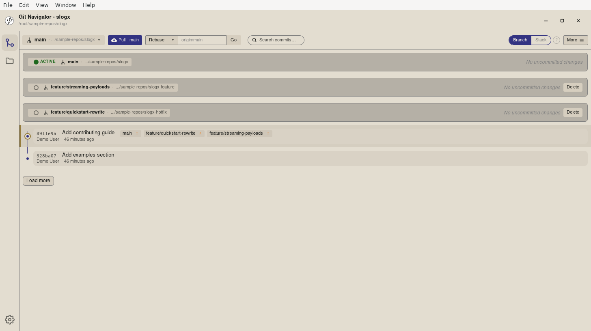
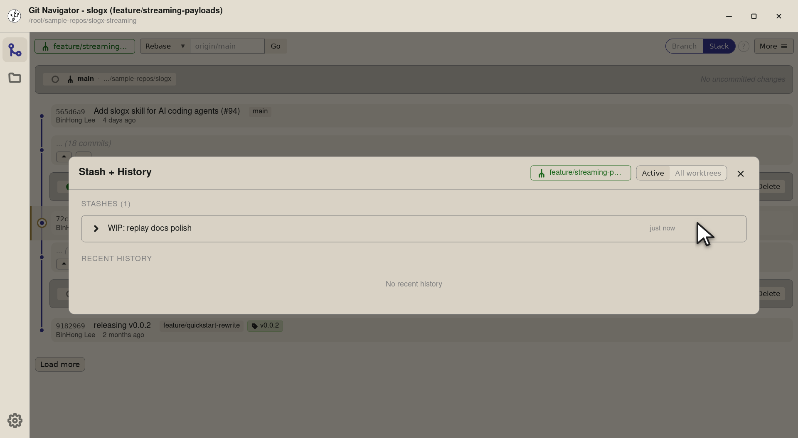
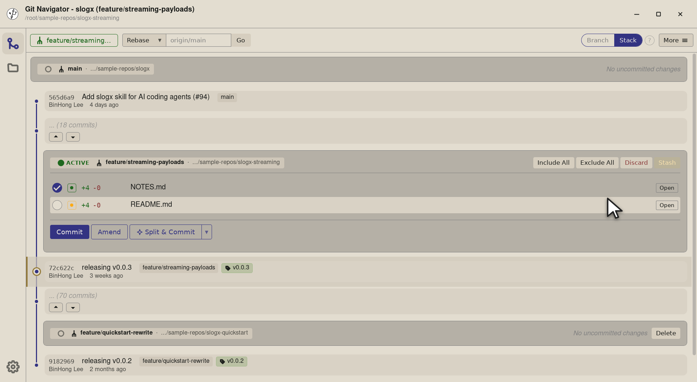

Walkthrough
-
Step 1. The uncommitted-changes panel for the active worktree already shows the staged files. Whenever there's something staged, the inline Stash button at the right of the panel lights up — it stashes the staged set and clears the panel in one step. -
Step 2. The button is gated on a non-empty included set, so you don't accidentally stash nothing. Title-text reflects the gate: "Stash included changes" when enabled, "No changes included to stash" when not. -

Step 3. Click and Git Navigator runs git stash push -m "Stashed from included changes" -- <files>for the included paths. The panel clears (no more staged changes), and the new stash drops in atstash@{0}ready to be inspected from the Stash + History overlay.
-

Step 1. Open More → Stash + History and the overlay shows every stash on the repo with its message and age — WIP: replay docs polish sits at stash@{0}. The list updates whenever you stash, pop, or drop from anywhere else in the app. -

Step 2. Each row carries a chevron that expands inline — no jump to another view. You stay on the overlay, so popping or dropping is always one click away while you're reading. -

Step 3. Expanding the row lists the files the stash touches. Click any of them and the same row reveals the diff for that file — Git Navigator runs git stash show -pfor you, but inline. -

Step 4. The diff renders with the same hunk display the diff view uses elsewhere, so you can read the stash without leaving the overlay. Decide to pop, drop, or close — without committing to anything yet.

-

Step 1. The stash sits at stash@{0}on the repo. The active worktree right now isslogx(main) — but we want the stash to land onslogx-streaminginstead. Click that worktree's radio to make it active. -

Step 2. Switching the active worktree re-targets the whole window: the graph, the uncommitted-changes panel, and — crucially for this flow — the Stash + History overlay's pop target. The active-worktree badge moves to the streaming row. -

Step 3. Open the overlay and the stash list is the same — stashes are repo-global. The Pop button runs against whichever worktree is currently active, so the next click sends the stash to slogx-streaming. -

Step 4. Pop lands the stashed changes on the streaming worktree — its uncommitted-changes panel fills with the files you stashed earlier on main. The stash entry is gone from the list (pop, not apply); a Drop button next to Pop would have removed it without applying.